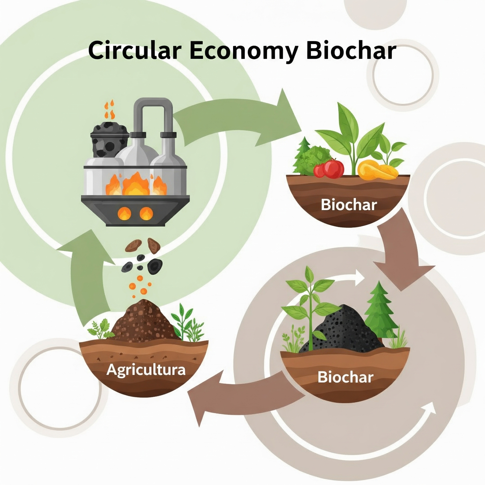

Nossos Resultados: Fazendo a Diferença!
Desde o início de nossas atividades, temos demonstrado um impacto significativo na sustentabilidade de Londrina. Veja nossos avanços:
Captação de CO2

Estimativa de 480 toneladas de CO2 capturadas até o momento, contribuindo para um ar mais puro.
Baseado em nossa metodologia de monitoramento de biomassa e áreas verdes.Áreas Verdes

Mais de 15.000 m² de novas áreas verdes e revitalizadas, incluindo telhados verdes, parques e SAFs.
Economia Circular e Biochar
Produzimos 10 toneladas de biochar a partir de resíduos agrícolas, melhorando a fertilidade do solo e sequestrando carbono.
Além disso, 15 toneladas de resíduos orgânicos foram desviados de aterros através de programas de compostagem.
Galeria de Impacto